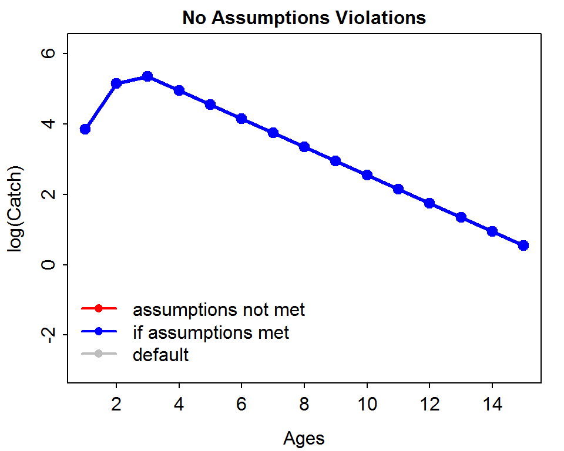

Estimating the mortality rate for a population of fish is a key component to estimating safe harvest levels for many fisheries. Mortality rates can be estimated with a variety of analytical methods but a very common method is the “catch curve” method. In its simplest form, the catch curve method uses the descending trend in log abundance-at-age versus age to estimate the instantaneous mortality rate (\(Z\)).
The catchCurveSim() function in the FSAsim package can be used to evaluate the effect of parameter values and assumption violations on the “shape” of the catch curve. This function works by creating several cohorts of fish with values of \(N_{0}\) (initial cohort size) and \(Z\) that are supplied by the user. These cohorts are then projected into the future (i.e., the \(Z\) is applied to \(N_0\) for a certain age) and a sample of the population in a given year is taken. The user can make choices to modify aspects of the simulation to understand how the catch-curve plot and the estimate of \(Z\) are effected.
The catchCurveSim() function has the following arguments:
max.age= the maximum age to model in the simulation (default is 15).deltaAge= the age at which the the mortality rate and initial population size multiplier takes effect (see below).recruit.age= the age for which the population of fish is fully recruited to the gear. This will correspond to the age at the peak log abundance of the catch curve.After calling the function, a plot will appear with three lines that connect points of log catch at age data. Three lines may not be apparent as they may be plotted on top of each other. The gray line is the catch curve at the initial or default values of the simulation (\(Z=0.4\) and \(N_{0}\)=700 with no assumption violations). This line is provided simply as a reference. The blue line is the catch curve for the current values of \(Z\) and \(N_{0}\) selected by the user (see below) but ignoring any assumption violations modeled by the user. Finally, the red line is the catch curve created by all choices made by the user, including changes to \(Z\) and \(N_{0}\) and any values that simulate assumption violations (see next page). The blue line is plotted after (or on top of) the red line which is after the gray line.
> catchCurveSim()
In RStudio, this plot will have a gear icon in the upper-left corner that will open a dialog box that allows you to change the following items in the simulation.
Z mean - the mean \(Z\) to use in the simulations. If Z CV (see next page) is set to 0 (the default), then this is the exact \(Z\) used in the simulations.No mean - the mean \(N_{0}\) to use in the simulations. If No CV (see next page) is set to 0 (the default), then this is the exact \(N_{0}\) used in the simulations.Changing these two values allows the user to see the effect of increasing or decreasing values of \(Z\) or \(N_{0}\) on the shape of the catch curve. Changing only these two sliders does not model assumption violations.